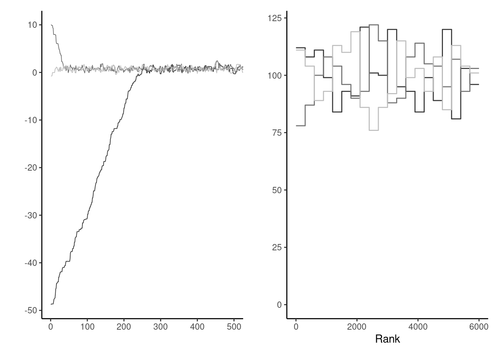

3 Simulation-based inference
There are two major approaches to handling the problem of the unknown normalizing constant that is the marginal likelihood: deterministic approximations (Laplace and nested Laplace approximations, variational methods and expectation propagation). This chapter covers stochastic approximations, and focuses on implementation of basic Markov chain Monte Carlo algorithms, which circumvent the need to calculate the normalizing constant of the posterior entirely. We present several examples of implementations, several tricks for tuning and diagnostics of convergence.
3.1 Monte Carlo methods
Consider a target distribution with finite expected value: think of the posterior of some model of interest, or some functional thereof. The law of large numbers guarantees that, if we can draw observations from our target distribution, then the sample average will converge to the expected value of that distribution, as the sample size becomes larger and larger, provided the expectation is finite.
We can thus compute the probability of any event or the expected value of any (integrable) function by computing sample averages; the cost to pay for this generality is randomness.
Specifically, suppose we are interested in the average \(\mathsf{E}\{g(X)\}\) of \(X_i \sim F\) for some function \(g\).
Example 3.1 Consider \(X \sim \mathsf{Ga}(\alpha, \beta)\), a gamma distribution with shape \(\alpha\) and rate \(\beta\). We can compute the probability that \(X < 1\) easily by Monte Carlo since \(\Pr(X <1) = \mathsf{E}\{\mathrm{I}(X<1)\}\) and this means we only need to compute the proportion of draws less than one. We can likewise compute the mean \(g(x) = x\) or variance.
Suppose we have drawn a Monte Carlo sample of size \(B\). If the function \(g(\cdot)\) is square integrable,1 with variance \(\sigma^2_g\), then a central limit theorem applies. In large samples and for independent observations, our Monte Carlo average \(\widehat{\mu}_g = B^{-1}\sum_{b=1}^B g(X_i)\) has variance \(\sigma^2_g/B\). We can approximate the unknown variance \(\sigma^2_g\) by it’s empirical counterpart.2. Note that, while the variance decreases linearly with \(B\), the choice of \(g\) impacts the speed of convergence: we can compute \(\sigma^2_g =\Pr(X \leq 1)\{1-\Pr(X \leq 1)\}=0.0434\) (left) and \(\sigma^2_g=\alpha/\beta^2=1/8\) (middle plot).
Figure 3.1 shows the empirical trace plot of the Monte Carlo average (note the \(\sqrt{B}\) \(x\)-axis scale!) as a function of the Monte Carlo sample size \(B\) along with 95% Wald-based confidence intervals (gray shaded region), \(\widehat{\mu}_g \pm 1.96 \times \sigma_g/\sqrt{B}\). We can see that the ‘likely region’ for the average shrinks with \(B\).
What happens if our function is not integrable? The right-hand plot of Figure 3.1 shows empirical averages of \(g(x) = x^{-1}\), which is not integrable if \(\alpha < 1\). We can compute the empirical average, but the result won’t converge to any meaningful quantity regardless of the sample size. The large jumps are testimonial of this.
We have already used Monte Carlo methods to compute posterior quantities of interest in conjugate models. Outside of models with conjugate priors, the lack of closed-form expression for the posterior precludes inference. Indeed, calculating the posterior probability of an event, or posterior moments, requires integration of the normalized posterior density and thus knowledge of the marginal likelihood. It is seldom possible to sample independent and identically distributed (iid) samples from the target, especially if the model is high dimensional: rejection sampling and the ratio of uniform method are examples of Monte Carlo methods which can be used to generate iid draws.
Example 3.2 (Rejection sampling) Rejection sampling (also termed accept-reject algorithm) samples from a random vector with density \(p(\cdot)\) by drawing candidates from a proposal with density \(p(\cdot)\), where \(q(\cdot)\) is such that \(p(\boldsymbol{\theta}) \leq C q(\boldsymbol{\theta})\) for \(C \geq 1\) for all values of \(\boldsymbol{\theta}\) in the support of \(p(\cdot)\). A proof can be found in Devroye (1986, Theorem 3.1)
- Generate \(\boldsymbol{\theta}^{\star}\) from the proposal with density \(q\) and \(U \sim \mathsf{U}(0,1)\)
- Compute the ratio \(R \gets C^{-1} p(\boldsymbol{\theta}^{\star})/ q(\boldsymbol{\theta}^{\star})/\).
- If \(R \leq U\), return \(\boldsymbol{\theta}\), else return to step 1.
Rejection sampling requires the proposal \(q\) to have a support at least as large as that of \(p\) and resemble closely the density. It should be chosen so that the bound \(C\) is as sharp as possible and close to 1. The dominating density \(q\) must have heavier tails than the density of interest. The expected number of simulations needed to accept one proposal is \(C\). We need to be able to compute an upper bound \(C\). Finally, for the method to be useful, we need to be able to simulate easily and cheaply from the proposal. The optimal value of \(C\) is \(C = \sup_{\boldsymbol{\theta}} p(\boldsymbol{\theta}) / q(\boldsymbol{\theta})\). This quantity may be obtained by numerical optimization, by finding the mode of the ratio of the log densities if the maximum is not known analytically.
Example 3.3 (Ratio of uniform method) The ratio-of-uniform method (Kinderman and Monahan 1977; Wakefield, Gelfand, and Smith 1991) is a niche simulation algorithm to draw samples from a unnormalized density \(f(\boldsymbol{\theta})\) for \(\boldsymbol{\theta} \in \boldsymbol{\Theta} \subseteq \mathbb{R}^d\). For some \(r \geq 0\), consider the set \[\begin{align*}
\mathcal{C}_r = \left\{ (u_0, \ldots, u_d): 0 < u_0 \leq \left[f(u_1/u_0^r, \ldots, u_d/u_0^r)\right]^{\frac{1}{rd+1}}\right\}.
\end{align*}\] If we can generate \(u_0, \ldots, u_d\) uniformly over \(\mathcal{C}_R\), then the draws \((u_1/u_0^r, \ldots, u_d/u_0^r)\) are from the normalized density \(f\). Rejection sampling is used to obtain uniform draws over \(\mathcal{C}_r\) under some conditions on the density and marginal moments. See the rust package vignette for technical details and examples. Like with other accept-reject algorithms, the acceptance rate of the proposal goes down with the dimension of the problem. This algorithm was used in Example 1.4 to generate draws from the posterior.
3.2 Markov chain Monte Carlo
Plain ordinary Monte Carlo is great, but few algorithms are generic enough to be useful in complex high-dimensional problems. Instead, we will construct a Markov chain with a given invariant distribution corresponding to the posterior. Markov chain Monte Carlo methods generate correlated draws that will target the posterior under suitable conditions.3
Before going forward with algorithms for sampling, we introduce some terminology that should be familiar to people with a background in time series analysis.
Definition 3.1 (Stationarity and Markov property) A stochastic (i.e., random) process is (weakly) stationary if the distribution of \(\{X_1, \ldots, X_t\}\) is the same as that of \(\{X_{n+1}, \ldots X_{t+n}\}\) for any value of \(n\) and given \(t\).
It is Markov if it satisfies the Markov property: given the current state of the chain, the future only depends on the current state and not on the past.
Example 3.4 Consider a first-order autoregressive process, or \(\mathsf{AR}(1)\), of the form
\[Y_t = \mu + \phi(Y_{t-1} - \mu) + \varepsilon_t,\] where \(\phi\) is the autoregressive process, \(\mu\) the global mean and \(\varepsilon_t\) is an iid innovation with mean zero and variance \(\sigma^2\). If \(|\phi| < 1\), the process is stationary, and the variance does not increase with \(t\). If innovations are Gaussian, then we have \(Y_t \mid Y_{t-1}=y_{t-1} \sim \mathsf{No}\{\mu(1-\phi)+ \phi y_{t-1}, \sigma^2\}\)
The \(\mathsf{AR}(1)\) stationarity process \(Y_t\), marginally, has mean \(\mu\) and unconditional variance \(\sigma^2/(1-\phi^2)\). The \(\mathsf{AR}(1)\) process is first-order Markov since the conditional distribution \(p(Y_t \mid Y_{t-1}, \ldots, Y_{t-p})\) equals \(p(Y_t \mid Y_{t-1})\).
Autoregressive processes are not the only ones we can consider, although their simplicity lends itself to analytic calculations. More generally, for a correlated sequence, the variance of the stationary distribution is \[\begin{align*} \mathsf{Va}(Y_t) + 2 \sum_{k=1}^\infty \mathsf{Co}(Y_t, Y_{t-k}) \end{align*}\]
Proposition 3.1 Intuitively, a sample of correlated observations carries less information than an independent sample of draws. If we want to compute sample averages \(\overline{Y}_T=(Y_1+ \cdots + Y_T)/T\), the variance will be \[\begin{align*} \mathsf{Va}\left(\overline{Y}_T\right) = \frac{1}{T}\sum_{t=1}^T \mathsf{Va}(Y_t) + \frac{2}{T} \sum_{t=1}^{T-1}\sum_{s = t+1}^T \mathsf{Co}(Y_t, Y_s). \end{align*}\]
In the independent case, the covariance is zero so we get the sum of variances. If the process is stationary, the covariances at lag \(k\) are the same regardless of the time index and the variance is some constant, say \(\sigma^2\); this allows us to simplify calculations, \[\begin{align*} \mathsf{Va}(\overline{Y}_T) = \sigma^2 \left\{ 1 + \frac{2}{T}\sum_{t=1}^{T-1} (T-t) \mathsf{Cor}(Y_{T-k}, Y_{T})\right\}. \end{align*}\] Denote the lag-\(k\) autocorrelation \(\mathsf{Cor}(Y_{t}, Y_{t+k})\) by \(\gamma_k\). Under technical conditions4, a central limit theorem applies and we get an asymptotic variance for the mean of \[\begin{align*} \lim_{T \to \infty} T\mathsf{Va}\left(\overline{Y}_T\right) = \sigma^2 \left\{1+2\sum_{t=1}^\infty \gamma_t\right\}. \end{align*}\] This statement holds only if we start with draws from the stationary distribution, otherwise bets are off.
A visual diagnostic of the time dependence of a Markov chain is the correlogram, which shows the empirical lag-\(k\) autocorrelation estimates against lag.
Example 3.5 The lag-\(k\) correlation of the stationary autoregressive process of order 1 is \(\phi^k\), so summing the series gives an asymptotic variance of \(\sigma^2(1+\phi)/(1-\phi)\). We can constrast that to the variance of the stationary distribution for an independent sample, which is \(\sigma^2/(1-\phi^2)\). The price to pay for having correlated samples is inefficiency: the higher the autocorrelation, the larger the variability of our mean estimators.

We can see from Figure 3.2 that, when the autocorrelation is positive (as will be the cause in all applications of interest), we will suffer from variance inflation. To get the same uncertainty estimates for the mean with an \(\mathsf{AR}(1)\) process with \(\phi \approx 0.75\) than with an iid sample, we would need nine times as many observations: this is the prize to pay.
When can we use output from a Markov chain in place of independent Monte Carlo draws? The assumptions laid out in the ergodic theorem are that the chain is irreducible and acyclic, ensuring that the chain has a unique stationary distribution.
To make sense of these concepts, we consider a discrete Markov chain over the integers \(1, 2, 3\). A discrete-time stochastic process is a random sequences whose elements are part of some set, the state space, here the integers. We can encode the probability of moving from one state to the next via a transition matrix, whose rows contain the probabilities of moving from one state to the next and thus sum to one. We can run a Markov chain by sampling an initial state \(X_0\) at random from \(\{1, \ldots, 5\}\) and then consider the transitions from the conditional distribution, sampling \(p(X_t \mid X_{t-1})\). Because of the Markov property, the history of the chain does not matter: we only need to read the value \(i=X_{t-1}\) of the state and pick the \(i\)th row of \(P_3\) to know the probability of the different moves from the current state.
Irreducible means that the chain can move from anywhere to anywhere, so it doesn’t get stuck in part of the space forever. A transition matrix such as \(P_1\) below describes a reducible Markov chain, because once you get into state \(2\) or \(3\), you won’t escape. With reducible chains, the stationary distribution need not be unique, and so the target would depend on the starting values.
Cyclical chains loop around and visit periodically a state: \(P_2\) is an instance of transition matrix describing a chain that cycles from \(1\) to \(3\), \(3\) to \(2\) and \(2\) to \(1\) every three iteration. An acyclic chain is needed for convergence of marginals.
\[ P_1 = \begin{pmatrix} 0.5 & 0.3 & 0.2 \\ 0 & 0.4 & 0.6 \\ 0 & 0.5 & 0.5 \end{pmatrix}, \qquad P_2 = \begin{pmatrix} 0 & 0 & 1 \\ 1 & 0 & 0 \\ 0 & 1 & 0 \end{pmatrix}. \]
If a chain is irreducible and aperiodic, it has a unique stationary distribution and the limiting distribution of the Markov chain will converge there. For example, we consider a transition \(P_3\) on \(1, \ldots, 5\) defined as \[ P_3 = \begin{pmatrix} \frac{2}{3} & \frac{1}{3} & 0 & 0 & 0 \\ \frac{1}{6} & \frac{2}{3} & \frac{1}{6} & 0 & 0 \\ 0 & \frac{1}{6} & \frac{2}{3} & \frac{1}{6} & 0 \\ 0 & 0 & \frac{1}{6} & \frac{2}{3} & \frac{1}{6} \\ 0 & 0 & 0 & \frac{1}{3} & \frac{2}{3} \\ \end{pmatrix} \] The stationary distribution is the value of the row vector \(\boldsymbol{p}\), such that \(\boldsymbol{p} = \boldsymbol{p}\mathbf{P}\) for transition matrix \(\mathbf{P}\): we get \(\boldsymbol{p}_1=(0, 5/11, 6/11)\) for \(P_1\), \((1/3, 1/3, 1/3)\) for \(P_2\) and \((1,2,2,2,1)/8\) for \(P_3\).
Figure 3.3 shows the path of the walk and the empirical proportion of the time spent in each state, as time progress. Since the Markov chain has a unique stationary distribution, we expect these to converge to it.

3.3 Markov chain Monte Carlo algorithms
The Markov chain Monte Carlo revolution in the 1990s made Bayesian inference mainstream by allowing inference for models when only approximations were permitted, and coincided with a time at which computers became more widely available. The idea is to draw correlated samples from a posterior via Markov chains, constructed to have the posterior as invariant stationary distribution.
3.4 Metropolis–Hastings algorithm
Named after Metropolis et al. (1953), Hastings (1970), its relevance took a long time to gain traction in the statistical community. The idea of the Metropolis–Hastings algorithm is to construct a Markov chain targeting a distribution \(p(\cdot)\).
Proposition 3.2 (Metropolis–Hastings algorithm) We consider from a density function \(p(\boldsymbol{\theta})\), known up to a normalizing factor not depending on \(\boldsymbol{\theta}\). We use a (conditional) proposal density \(q(\boldsymbol{\theta} \mid \boldsymbol{\theta}^*)\) which has non-zero probability over the support of \(p(\cdot)\), as transition kernel to generate proposals.
The Metropolis–Hastings build a Markov chain starting from an initial value \(\boldsymbol{\theta}_0\):
- draw a proposal value \(\boldsymbol{\theta}_t^{\star} \sim q(\boldsymbol{\theta} \mid \boldsymbol{\theta}_{t-1})\).
- Compute the acceptance ratio \[ R = \frac{p(\boldsymbol{\theta}_t^{\star})}{p(\boldsymbol{\theta}_{t-1})}\frac{q(\boldsymbol{\theta}_{t-1} \mid \boldsymbol{\theta}_t^{\star} )}{q(\boldsymbol{\theta}_t^{\star} \mid \boldsymbol{\theta}_{t-1})} \tag{3.1}\]
- With probability \(\max\{R, 1\}\), accept the proposal and set \(\boldsymbol{\theta}_t \gets \boldsymbol{\theta}_t^{\star}\), otherwise set the value to the previous state, \(\boldsymbol{\theta}_t \gets \boldsymbol{\theta}_{t-1}\).
Remark (Interpretation of the algorithm). If \(R>1\), the proposal has higher density and we always accept the move. If the ratio is less than one, the proposal is in a lower probability region, we accept the move with probability \(R\) and set \(\boldsymbol{\theta}_{t}=\boldsymbol{\theta}^{\star}_t\); if we reject, the Markov chain stays at the current value, which induces autocorrelation. Since the acceptance probability depends only on the density through ratios, we can work with unnormalized density functions and this is what allows us, if our proposal density is the (marginal) posterior of the parameter, to obtain approximate posterior samples without having to compute the marginal likelihood.
Remark (Blank run). To check that the algorithm is well-defined, we can remove the log likelihood component and run the algorithm: if it is correct, the resulting draws should be drawn from the prior (Green 1995).
Remark (Symmetric proposals). Suppose we generate a candidate sample \(\boldsymbol{\theta}_t^{\star}\) from a symmetric distribution \(q(\cdot \mid \cdot)\) centered at \(\boldsymbol{\theta}_{t-1}\), such as the random walk \(\boldsymbol{\theta}_t^{\star} =\boldsymbol{\theta}_{t-1}+ Z\) where \(Z\) has a symmetric distribution. Then, the proposal density ratio cancels so need not be computed in the Metropolis ratio of Equation 3.1.
Remark (Calculations). In practice, we compute the log of the acceptance ratio, \(\ln R\), to avoid numerical overflow. If our target is log posterior density, we have \[ \ln \left\{\frac{p(\boldsymbol{\theta}_t^{\star})}{p(\boldsymbol{\theta}_{t-1})}\right\} = \ell(\boldsymbol{\theta}_t^{\star}) + \ln p(\boldsymbol{\theta}_t^{\star}) - \ell(\boldsymbol{\theta}_{t-1}) - \ln p(\boldsymbol{\theta}_{t-1}) \] and we proceed likewise for the log of the ratio of transition kernels. We then compare the value of \(\ln R\) (if less than zero) to \(\log(U)\), where \(U \sim \mathsf{U}(0,1)\). We accept the move if \(\ln(R) >\log(U)\) and keep the previous value otherwise.
Example 3.6 Consider again the Upworthy data from Example 2.6. We model the Poisson rates \(\lambda_i\) \((i=1,2)\), this time with the usual Poisson regression parametrization in terms of log rate for the baseline , \(\log(\lambda_2) = \beta\), and log odds rates \(\kappa = \log(\lambda_1) - \log(\lambda_2)\). Our model is \[\begin{align*} Y_{i} &\sim \mathsf{Po}(n_i\lambda_i), \qquad (i=1,2)\\ \lambda_1 &= \exp(\beta\kappa) \\ \lambda_2 &= \exp(\beta) \\ \beta & \sim \mathsf{No}(\log 0.01, 1.5) \\ \kappa &\sim \mathsf{No}(0, 1) \end{align*}\] There are two parameters in the model, which can be updated in turn or jointly.
data(upworthy_question, package = "hecbayes")
# Compute sufficient statistics
data <- upworthy_question |>
dplyr::group_by(question) |>
dplyr::summarize(ntot = sum(impressions),
y = sum(clicks))
# Code log posterior as sum of log likelihood and log prior
loglik <- function(par, counts = data$y, offset = data$ntot, ...){
lambda <- exp(c(par[1] + log(offset[1]), par[1] + par[2] + log(offset[2])))
sum(dpois(x = counts, lambda = lambda, log = TRUE))
}
logprior <- function(par, ...){
dnorm(x = par[1], mean = log(0.01), sd = 1.5, log = TRUE) +
dnorm(x = par[2], log = TRUE)
}
logpost <- function(par, ...){
loglik(par, ...) + logprior(par, ...)
}
# Compute maximum a posteriori (MAP)
map <- optim(
par = c(-4, 0.07),
fn = logpost,
control = list(fnscale = -1),
offset = data$ntot,
counts = data$y,
hessian = TRUE)
# Use MAP as starting value
cur <- map$par
# Compute logpost_cur - we can keep track of this to reduce calculations
logpost_cur <- logpost(cur)
# Proposal covariance
cov_map <- -2*solve(map$hessian)
chol <- chol(cov_map)
set.seed(80601)
niter <- 1e4L
chain <- matrix(0, nrow = niter, ncol = 2L)
colnames(chain) <- c("beta","kappa")
naccept <- 0L
for(i in seq_len(niter)){
# Multivariate normal proposal - symmetric random walk
prop <- chol %*% rnorm(n = 2) + cur
logpost_prop <- logpost(prop)
# Compute acceptance ratio (no q because the ratio is 1)
logR <- logpost_prop - logpost_cur
if(logR > -rexp(1)){
cur <- prop
logpost_cur <- logpost_prop
naccept <- naccept + 1L
}
chain[i,] <- cur
}
# Posterior summaries
summary(coda::as.mcmc(chain))
Iterations = 1:10000
Thinning interval = 1
Number of chains = 1
Sample size per chain = 10000
1. Empirical mean and standard deviation for each variable,
plus standard error of the mean:
Mean SD Naive SE Time-series SE
beta -4.51268 0.001697 1.697e-05 6.176e-05
kappa 0.07075 0.002033 2.033e-05 9.741e-05
2. Quantiles for each variable:
2.5% 25% 50% 75% 97.5%
beta -4.51591 -4.51385 -4.51273 -4.51154 -4.50929
kappa 0.06673 0.06933 0.07077 0.07212 0.07463# Computing standard errors using batch means
sqrt(diag(mcmc::olbm(chain, batch.length = niter/40)))[1] 5.717097e-05 8.220816e-05The acceptance rate of the algorithm is 35.1% and the posterior means are \(\beta =-4.51\) and \(\kappa =0.07\). The standard errors cannot be calculated from the empirical standard deviations. The output of thecoda package are based on fitting an autoregressive process to the Markov chain and using the formula to compute the central limit theorem variance. An alternative method recommended by Geyer (2011) and implemented in his R package mcmc, is to segment the time series into batch, compute the means of each non-overlapping segment and use this standard deviation with suitable rescaling to get the central limit variance for the posterior mean.

Figure 3.5 shows the posterior samples, which are very nearly bivariate Gaussian. The parametrization in terms of log odds ratio induces strong negative dependence, so if we were to sample \(\kappa\), then \(\beta\), we would have much larger inefficiency and slower exploration. Instead, the code used a bivariate Gaussian random walk proposal whose covariance matrix was taken as a multiple of the inverse of the negative hessian (equivalently, to the observed information matrix of the log posterior), evaluated at of the maximum a posteriori. This Gaussian approximation is called Laplace approximation: it is advisable to reparametrize the model so that the distribution is nearly symmetric, so that the approximation is good. In this example, because of the large sample, the Gaussian approximation implied by Bernstein–von Mises’ theorem is excellent.

Proposition 3.3 (Visual diagnostics for Markov chains) It is useful to inspect visually the Markov chain, as it may indicate several problems. If the chain drifts around without stabilizing around the posterior mode, then we can suspect that it either hasn’t reached it’s stationary distribution (likely due to poor starting values). In such cases, we need to disregard the dubious draws from the chain by discarding the so-called warm up or burn in period. While there are some guarantees of convergence, silly starting values may translate into tens of thousands of iterations lost wandering around. Preliminary optimization and plausible starting values help alleviate these problems. Figure 3.6 shows the effect of bad starting values on a toy problem where convergence to the mode is relatively fast. If the proposal is in a flat region of the space, it can wander around for a very long time before converging to the stationary distribution.
If we run several chains, as in Figure 3.6, with different starting values, we can monitor convergence by checking whether these chains converge to the same target. A trace rank plots, shown on right panel of Figure 3.6, compares the rank of the values of the different chain at a given iteration: with good mixing, the ranks should switch frequently and be distributed uniformly across integers.

The quality of the mixing of the chain (autocorrelation), depends on the proposal variance, which can obtain by trial and error. Trace plots Figure 3.4 show the values of the chain as a function of iteration number. If our algorithm works well, we expect the proposals to center around the posterior mode and resemble a fat hairy caterpillar. If the variance is too small, the acceptance rate will increase but most steps will be small. If the variance of the proposal is too high, the acceptance rate will decrease (as many proposal moves will have much lower posterior), so the chain will get stuck for long periods of time. This is Goldilock’s principle, as illustrated in Figure 3.7.

One way to calibrate is to track the acceptance rate of the proposals: for the three chains in Figure 3.7, these are 0.932, 0.33, 0.12. In one-dimensional toy problems with Gaussian distributions, an acceptance rate of 0.44 is optimal, and this ratio decreases to 0.234 when \(D \geq 2\) Sherlock (2013). This need not generalize to other settings and depends on the context. Optimal rate for alternative algorithms, such as Metropolis-adjusted Langevin algorithm, are typically higher.
We can tune the variance of the global proposal (Andrieu and Thoms 2008) to improve the mixing of the chains at approximate stationarity. This is done by increasing (decreasing) the variance if the historical acceptance rate is too high (respectively low) during burn-in period, and reinitializing after any change with an acceptance target of \(0.44\). We stop adapting to ensure convergence to the posterior after a suitable number of initial iterations. Adaptive MCMC methods use an initial warm up period to find good proposals: we can consider a block of length \(L\), compute the acceptance rate, multiply the variance by a scaling factor and run the chain a little longer. We only keep samples obtained after the adaptation phase.
We can also plot the autocorrelation of the entries of the chain as a function of lags, a display known as correlogram in the time series literature but colloquially referred to as autocorrelation function (acf). The higher the autocorrelation, the more variance inflation one has and the longer the number of steps before two draws are treated as independent. Figure 3.8 shows the effect of the proposal variance on the correlation for the three chains. Practitioners designing very inefficient Markov chain Monte Carlo algorithms often thin their series: that is, they keep only every \(k\) iteration. This is not recommended practice unless storage is an issue and usually points towards inefficient sampling algorithms.

Remark (Independence Metropolis–Hastings). If the proposal density \(q(\cdot)\) does not depend on the current state \(\boldsymbol{\theta}_{t-1}\), the algorithm is termed independence. To maximize acceptance, we could design a candidate distribution whose mode is at the maximum a posteriori value. To efficiently explore the state space, we need to place enough density in all regions, for example by taking a heavy-tailed distributions, so that we explore the full support. Such proposals can be however inefficient and fail when the distribution of interest is multimodal. The independence Metropolis–Hastings algorithm then resembles accept-reject. If the ratio \(p(\boldsymbol{\theta})/q(\boldsymbol{\theta})\) is bounded above by \(C \geq 1\), then we can make comparisons with rejection sampling. Lemma 7.9 of Robert and Casella (2004) shows that the probability of acceptance of a move for the Markov chain is at least \(1/C\), which is larger than the accept-reject.
In models with multiple parameter, we can use Metropolis–Hastings algorithm to update every parameter in turn, fixing the value of the others, rather than update them in block. The reason behind this pragmatic choice is that, as for ordinary Monte Carlo sampling, the acceptance rate goes down sharply with the dimension of the vector. Updating parameters one at a time can lead to higher acceptance rates, but slower exploration as a result of the correlation between parameters.
If we can factorize the log posterior, then some updates may not depend on all parameters: in a hierarchical model, hyperpriors parameter only appear through priors, etc. This can reduce computational costs.
Proposition 3.4 (Parameter transformation) If a parameter is bounded in the interval \((a,b)\), where \(-\infty \leq a < b \leq \infty\), we can consider a bijective transformation \(\vartheta \equiv t(\theta): (a,b) \to \mathbb{R}\) with differentiable inverse. The log density of the transformed variable, assuming it exists, is \[\begin{align*} f_\vartheta(\vartheta) = f_{\theta}\{t^{-1}(\vartheta)\} \left| \frac{\mathrm{d}}{\mathrm{d} \vartheta} t^{-1}(\vartheta)\right| \end{align*}\] For example, we can use of the following transformations for finite \(a, b\) in the software:
- if \(\theta \in (a, \infty)\) (lower bound only), then \(\vartheta = \log(\theta-a)\) and \(f_{\vartheta}(\vartheta)=f_{\theta}\{\exp(\vartheta) + a\}\cdot \exp(\vartheta)\)
- if \(\theta \in (-\infty, b)\) (upper bound only), then \(\vartheta = \log(b-\theta)\) and \(f_{\vartheta}(\vartheta)=f_{\theta}\{b-\exp(\vartheta)\}\cdot \exp(\vartheta)\)
- if \(\theta \in (a, b)\) (both lower and upper bound), then \(\vartheta = \mathrm{logit}\{(\theta-a)/(b-a)\}\) and \[\begin{align*} f_{\vartheta}(\vartheta)&=f_{\theta}\{a+(b-a) \mathrm{expit}(\vartheta)\} (b-a)\\&\quad \times \mathrm{expit}(\vartheta)\{1-\mathrm{expit}(\vartheta)\} \end{align*}\]
To guarantee that our proposals fall in the support of \(\theta\), we can thus run a symmetric random walk proposal on the transformed scale by drawing \(\vartheta_{t}^{\star} \sim \vartheta_{t-1}+\tau Z\) where \(Z\sim\mathsf{No}(0, 1)\). Due to the transformation, the kernel ratio now contains the Jacobian.
Proposition 3.5 (Truncated proposals) As an alternative, if we are dealing with parameters that are restricted in \([a,b]\), we can simulate \(\theta^{\star}_{t} \sim \mathsf{TNo}(\vartheta_{t-1}, \tau^2, a, b).\) The density of a univariate truncated Gaussian variable is \[\begin{align*}
f(x; \mu, \tau, a, b) = \tau^{-1}\frac{\phi\left(\frac{x-\mu}{\tau}\right)}{\Phi\{(b-\mu)/\tau\}-\Phi\{(a-\mu)/\tau\}}.
\end{align*}\] where \(\phi(\cdot), \Phi(\cdot)\) are respectively the density and distribution function of the standard Gaussian distribution. While the benefit of using the truncated proposal isn’t obvious, it becomes more visible when we move to more advanced proposals whose mean and variance depends on the gradient and or the hessian of the underlying unnormalized log posterior, as the mean can be lower than \(a\) or larger than \(b\) while still giving non-zero acceptance. The TruncatedNormal package can be used to efficiently evaluate such instances using results from Botev and L’Écuyer (2017) even when the truncation bounds are far from the mode. Note that the normalizing constant of the truncated Gaussian in the denominator of the density are a function of the location and scale parameters: if these are dependent on the current value, as is the case for a random walk, we need to keep these terms as part of the Metropolis ratio. The mean and standard deviation of the trunctaed Gaussian are not equal to the parameters \(\mu\) (which corresponds to the mode, provided \(a < \mu < b\)) and \(\sigma\).
Proposition 3.6 (Efficient proposals) Rather than simply build a random walk, we can exploit the geometry of the posterior using the gradient, via Metropolis-ajusted Langevin algorithm (MALA), or using local quadratic approximations of the target.
Let \(p(\theta)\) denote the conditional (unnormalized) log posterior for a scalar parameter \(\theta \in (a, b)\). We considering a Taylor series expansion of \(p(\cdot)\) around the current parameter value \(\theta_{t-1}\), \[\begin{align*} p(\theta) \approx p(\theta_{t-1}) + p'(\theta_{t-1})(\theta - \theta_{t-1}) + \frac{1}{2} p''(\theta_{t-1})(\theta - \theta_{t-1})^2 \end{align*}\] plus remainder, which suggests a Gaussian approximation with mean \(\mu_{t-1} = \theta_{t-1} - f'(\theta_{t-1})/f''(\theta_{t-1})\) and precision \(\tau^{-2} = -f''(\theta_{t-1})\). We use truncated Gaussian distribution on \((a, b)\) with mean \(\mu\) and standard deviation \(\tau\), denoted \(\mathsf{TNo}(\mu, \tau, a, b)\) with corresponding density function \(q(\cdot; \mu, \tau, a, b)\). The Metropolis acceptance ratio for a proposal \(\theta^{\star}_{t} \sim \mathsf{TNo}(\mu_{t-1}, \tau_{t-1}, a, b)\) is \[\begin{align*} \alpha = \frac{p(\theta^{\star}_{t})}{p(\theta_{t-1})} \frac{ q(\theta_{t-1} \mid \mu_{t}^{\star}, \tau_{t}^{\star}, a, b)}{q(\theta^{\star}_{t} \mid \mu_{t-1}, \tau_{t-1}, a, b)} \end{align*}\] and we set \(\theta^{(t+1)} = \theta^{\star}_{t}\) with probability \(\min\{1, r\}\) and \(\theta^{(t+1)} = \theta_{t-1}\) otherwise. To evaluate the ratio of truncated Gaussian densities \(q(\cdot; \mu, \tau, a, b)\), we need to compute the Taylor approximation from the current parameter value, but also the reverse move from the proposal \(\theta^{\star}_{t}\). Another option is to modify the move dictated by the rescaled gradient by taking instead \[\mu_{t-1} = \theta_{t-1} - \eta f'(\theta_{t-1})/f''(\theta_{t-1}).\] The proposal includes an additional tuning parameter, \(\eta \leq 1\), whose role is to prevent oscillations of the quadratic approximation, as in a Newton–Raphson algorithm. Relative to a random walk Metropolis–Hastings, the proposal automatically adjusts to the local geometry of the target, which guarantees a higher acceptance rate and lower autocorrelation for the Markov chain despite the higher evaluation costs. The proposal requires that both \(f''(\theta_{t-1})\) and \(f''(\theta^{\star}_{t})\) be negative since the variance is \(-1/f''(\theta)\): this shouldn’t be problematic in the vicinity of the mode. Otherwise, one could use a global scaling derived from the hessian at the mode.
For MALA to work well, we need both to start near stationarity, to ensure that the gradient is relatively small and to prevent oscillations. One can dampen the size of the step initially if needed to avoid overshooting. Note that the proposal variance, the other tuning parameter, is critical to the success of the algorithm. The usual target for the variance is one that gives an acceptance rate of roughly 0.574. These more efficient methods require additional calculations of the gradient and Hessian, either numerically or analytically. Depending on the situation and the computational costs of such calculations, the additional overhead may not be worth it.
Example 3.7 We revisit the Upworthy data, this time modelling each individual headline as a separate observation and using a Gaussian likelihood for the rate nclick/nimpression This allows up to capture the heterogeneity inherent to each newstory.
Meaning \(\mathsf{E}\{g^2(X)\}<\infty\), so the variance of \(g(X)\) exists.↩︎
By contrasts, if data are identically distributed but not independent, care is needed↩︎
While we won’t focus on the fine prints of the contract, there are conditions for validity and these matter!↩︎
Geometric ergodicity and existence of moments, among other things.↩︎